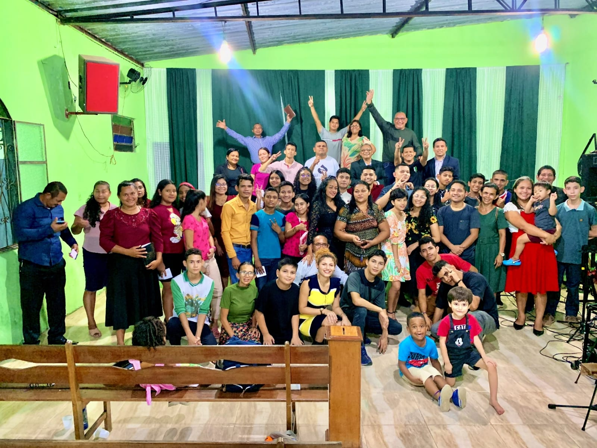
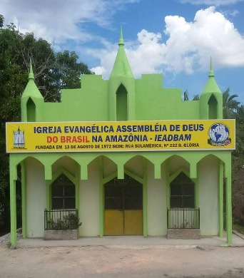

Ele disse IDEe eu vou!


JESUS te ama!
Ele quer te
|
Tudo posso naquele que me fortalece.
Filipenses 4:13
Filipenses 4:13
Somos IEADBAM
Grupo de Jovens Setor Norte.
Cuidando dos que
foram esquecidos
pelo caminho
Fundamentado no Livro de Rute 2:15, somos uma Igreja que CUIDA DOS ESQUECIDOS PELO CAMINHO. Temos a convicção que Deus chamou a IEADBAM com objetivo de cuidar daqueles que ficaram caídos pelas “gavelas” da vida e que não foram cuidados pelas grandes “máquinas” (Igrejas) de colheita do Evangelho.
Fundamentado no Livro de Rute 2:15, somos uma Igreja que CUIDA DOS ESQUECIDOS PELO CAMINHO. Temos a convicção que Deus chamou a IEADBAM com objetivo de cuidar daqueles que ficaram caídos pelas “gavelas” da vida e que não foram cuidados pelas grandes “máquinas” (Igrejas) de colheita do Evangelho.

Nossas Igrejas


